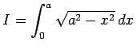
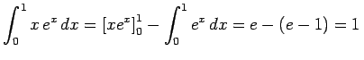

Inhalt Index DeskTop Bronstein

 Integralrechnung Bestimmte Integrale Grundbegriffe, Regeln und Sätze Berechnung bestimmter Integrale
Integralrechnung Bestimmte Integrale Grundbegriffe, Regeln und Sätze Berechnung bestimmter Integrale


Durch geeignete Umformung können bestimmte Integrale in vielen Fällen mittels der Substitutionsregel und der Methode der partiellen Integration berechnet werden.
| Beispiel A |
|
Einsatz der Substitutionsregel für .
|
| Beispiel B |
|
Methode der partiellen Integration: . |